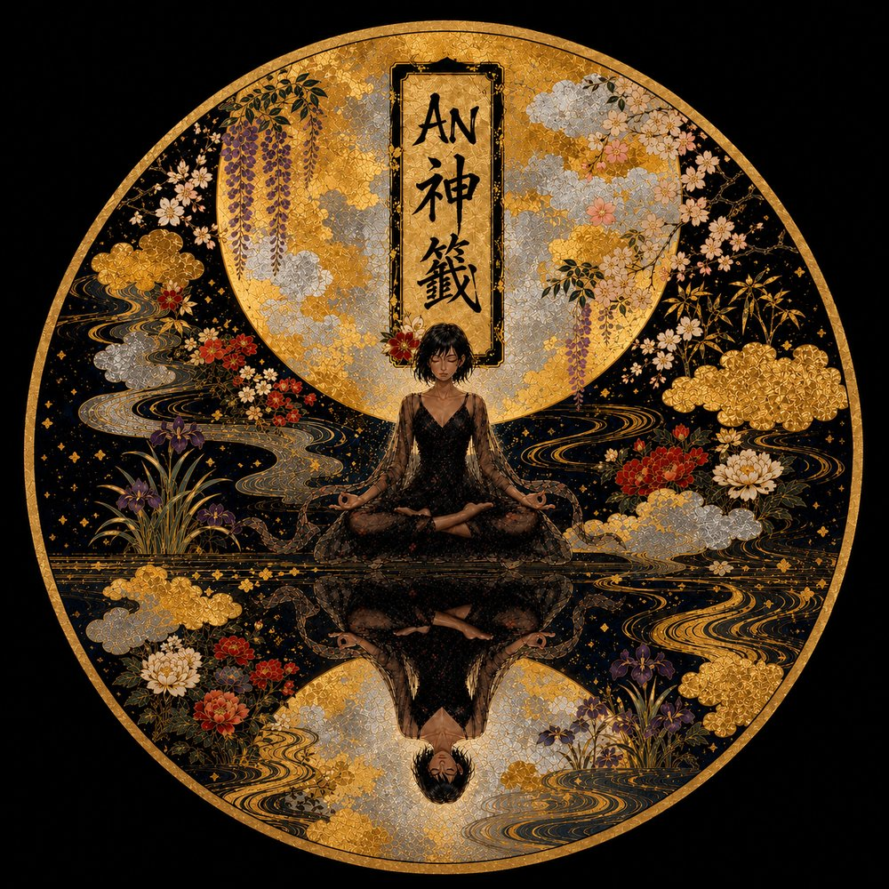

Open Gate Sutraひらかれた般若心経の家
A worldwide remix platform for the Heart Sutra
One sutra, 262 characters.
Recomposed by the world.
般若心経を、あなたのジャンルで作曲して、投稿する。
世界中の般若心経を聴いて、作った人と語り合う。
Cross the gate — submit your remix30 seconds · no account · your track stays yours
How to cross
渡り方Make it yours
Take the free kit — the 262 characters, romaji, Sanskrit, and field-tested SUNO tips. Drill, bossa, gospel, gagaku. Any genre is a valid prayer.
Kit free forever · CC0
Paste your link
Publish on SUNO (commercial-use plan) or YouTube, then paste the link here with your name and country. No account, no upload.
30 seconds
Cross, and be heard
Every sound work enters the Hall permanently, under your name — and opens its own thread, so listeners can talk with you. AN stamps her seal on the ones that make her look up.
Honor is added · never revoked
Today's Nine
今日の九曲Your remix stays yours — monetize it anywhere. When AN stamps her seal, we send our audience to you.
作ったものは、あなたのもの。選ばれたら、家があなたへ観客を送り出す。
写経に功徳があったように、リミックスに功徳を。
The House
家の間取りMain Hall 本堂
The gate and the hall. Submit your remix, and listen to the world's Heart Sutra gathering here — today's nine, every day.
Approach 参道
A small shrine on the path. Draw a fortune, and AN reads you a verse for your day.
Side Rooms 脇間
Let the sutra play on — the first twenty-three tracks, the ambient playlist, and the film rest in the first archive.

The Oracle
AN神籤 — 参道の小さな社
A side chapel off the main hall. Draw a fortune, and AN reads you a verse for your day.
Draw today's fortune — 籤を引く